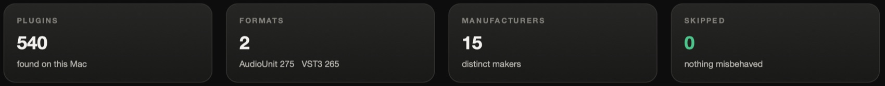
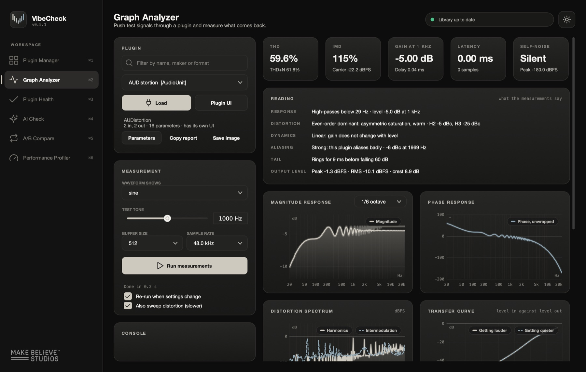
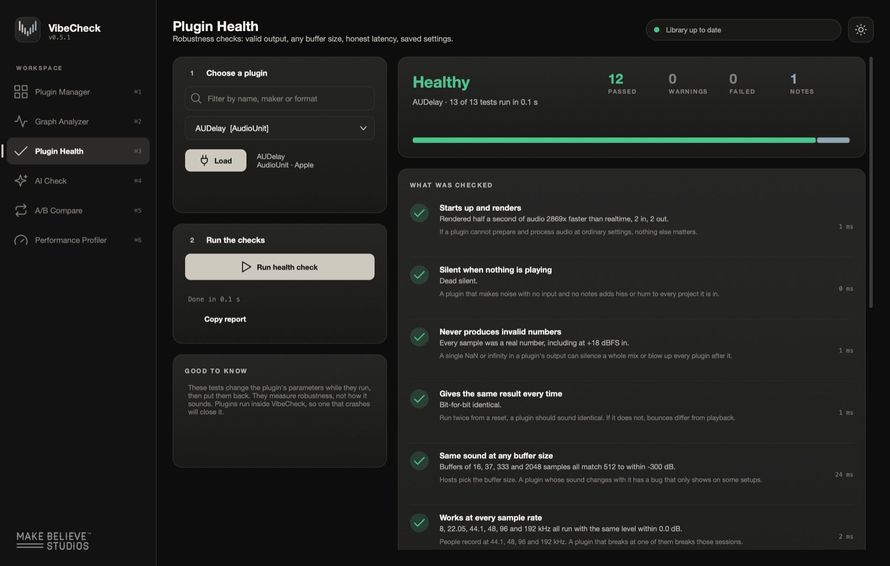
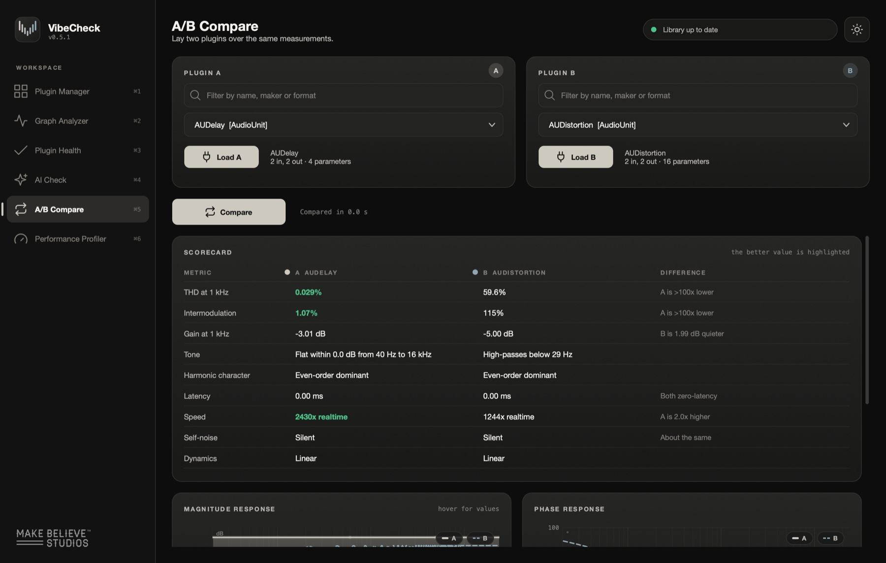
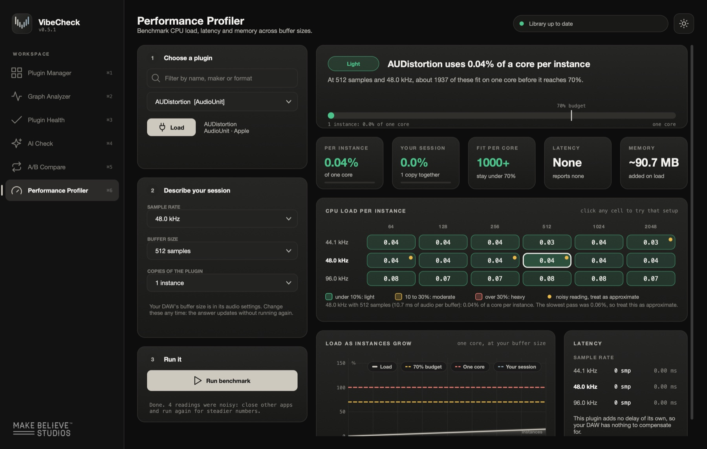
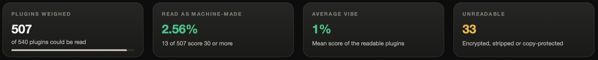
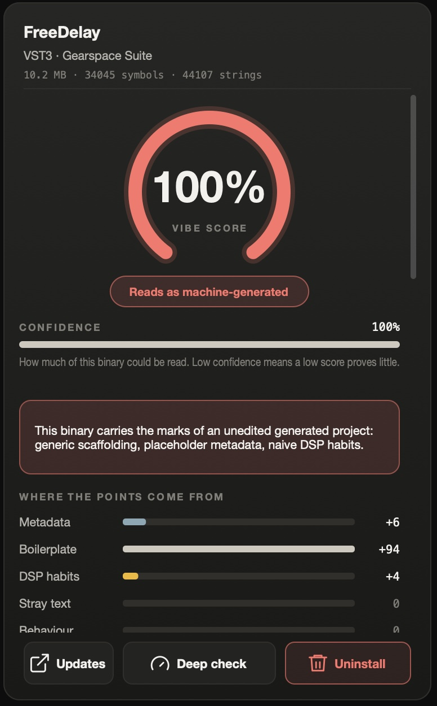

User manual
VibeCheck
How to measure a plugin, read what the numbers mean, and compare two plugins fairly.
Contents
1What VibeCheck is
VibeCheck loads an audio plugin outside your DAW, plays test signals through it, and tells you what came back.
It answers five kinds of question:
| Question | Page |
|---|---|
| What does this plugin do to the sound? | Graph Analyzer |
| Is it safe to rely on in a session? | Plugin Health |
| How do these two plugins differ? | A/B Compare |
| How much CPU will it cost me? | Performance Profiler |
| Does it look machine-generated? | AI Check |
2Getting started
Install
| System | What to do |
|---|---|
| Mac | Open the disk image and drag VibeCheck into Applications. Needs macOS 11 or later; works on Apple silicon and Intel. |
| Windows | Run VibeCheck-Windows-Setup.exe. Needs Windows 10 or 11, 64-bit. A portable zip is also available if you would rather not install. |
The first time you open it
The installers are not signed with a paid certificate, so your computer asks once before running them. Nothing is wrong with the file.
- Mac: right-click (or Control-click) VibeCheck in Applications and choose Open, then Open again. If that option is missing, go to System Settings → Privacy & Security, scroll down and click Open Anyway.
- Windows: when SmartScreen says "Windows protected your PC", click More info, then Run anyway.
Let it find your plugins
On first launch VibeCheck scans the standard plugin folders. The pill at the top right shows progress and ends on Library up to date. Scanning happens in a separate process, so a plugin that crashes while being scanned cannot take VibeCheck down; it is listed as skipped instead.
| System | Formats | Where it looks |
|---|---|---|
| Mac | AudioUnit, VST3 | /Library/Audio/Plug-Ins and the same folder in your home Library |
| Windows | VST3 | C:\Program Files\Common Files\VST3 |
3Finding your way around
The rail on the left switches between six pages. Each page works the same way: choose a plugin, press the one large button, read the result.
| Page | Shortcut | What it is for |
|---|---|---|
| Plugin Manager | ⌘1 / Ctrl+1 | Everything installed, by name, format and maker |
| Graph Analyzer | ⌘2 / Ctrl+2 | Measure one plugin in detail |
| Plugin Health | ⌘3 / Ctrl+3 | Thirteen robustness checks |
| AI Check | ⌘4 / Ctrl+4 | Signs of machine-generated code |
| A/B Compare | ⌘5 / Ctrl+5 | Two plugins, same measurements, side by side |
| Performance Profiler | ⌘6 / Ctrl+6 | CPU load, latency and memory |
Choosing a plugin
Every page has the same picker. Type in the Filter box to narrow the list by name, maker or format, pick the plugin from the menu, then press Load. The line beside the button confirms what loaded: its channels and how many parameters it has.
A plugin with both an AudioUnit and a VST3 version appears twice. They are separate builds and can measure differently, so check you picked the one you use.
Around the edges
- Sun or moon button (top right): switches between the dark and light look. Your choice is remembered.
- Status pill (top right): what the library scan is doing.
- Manual (bottom of the rail): opens this document.
- Update button (bottom of the rail): appears only when a newer version exists. Click it to open the download page.
- Plugin Manager → Reset skipped: gives plugins that failed a scan another chance, for instance after you have activated them.

4Graph Analyzer
Push test signals through a plugin and measure what comes back.

- Pick a plugin and press Load.
- Set the plugin how you want it measured. Plugin UI opens the plugin's own window; Parameters opens a plain list of every control with a filter, a reset and a randomise button.
- Press Run measurements. It takes a second or two.
- Read the five tiles, then the Reading card, then the graphs. Scroll for more graphs.
The measurement settings
| Control | What it does |
|---|---|
| Test tone | The frequency of the sine used for distortion, 1000 Hz unless you move it. Try 100 Hz on a bass processor or 5 kHz on a de-esser. |
| Buffer size | How many samples the plugin is handed at a time, like your DAW's buffer setting. |
| Sample rate | Measure at the rate you actually work at. Results can change with it. |
| Waveform shows | Which test signal the "Captured output" graph displays. |
| Re-run when settings change | Measures again whenever you move a control, so you can watch a curve respond while you turn a knob. |
| Also sweep distortion (slower) | Adds two graphs: distortion against level and distortion against frequency. |
What it plays
Five signals, one after another: a single click (for frequency response, phase and the tail), a pure tone (for distortion and gain), two tones at once at 60 Hz and 7 kHz (for intermodulation), a level ramp (for dynamics), and silence (for self-noise). A sixth, a tone at 9 kHz when working at 48 kHz, is there to expose aliasing.
Instruments
A synth makes no sound from audio input, so VibeCheck plays it a MIDI note instead and measures the note. The frequency response of an instrument is not meaningful in the same way; look at the spectrum, the noise and the tail.
Keeping a result
- Copy report puts every number on the clipboard as text, ready to paste into a message or a note.
- Save image saves the results as a picture.
5Reading the measurements
The ranges below are rules of thumb for judging a plugin that is meant to be clean. For a plugin that is meant to add character, high numbers are the point.
The five tiles
| Tile | What it means | How to read it |
|---|---|---|
| THD | Total harmonic distortion: how much of the output is new overtones the input did not have. THD+N underneath includes noise too. | Under 0.01%: transparent. 0.01–0.1%: clean. 0.1–1%: audible colour. Over 1%: obvious saturation. |
| IMD | Intermodulation: new tones created when two notes play together. It is the harsher, less musical kind of distortion. | Read it like THD. A plugin with low THD but high IMD sounds clean on single notes and rough on chords. |
| Gain at 1 kHz | How much louder or quieter the plugin makes a mid-range tone. | 0 dB is unity. Anything else matters when comparing: louder nearly always sounds "better". |
| Latency | The delay the plugin tells the host about, in milliseconds and samples. | 0 is ideal for tracking. Larger values are normal for look-ahead limiters and linear-phase EQs; your DAW compensates. |
| Self-noise | What comes out when nothing goes in. | "Silent" or below −120 dBFS: inaudible. Above −90 dBFS: hiss you may hear when many instances stack up. Analog models often add noise on purpose. |
The Reading card
Each line is a plain-language summary of one family of measurements.
| Line | What it tells you |
|---|---|
| Response | The overall tone: flat, or rolling off the lows or highs, and from where. "Flat within 0.1 dB from 40 Hz to 16 kHz" is a plugin that does not change tone at its current settings. |
| Distortion | The character of the overtones. Even-order (H2, H4) reads as warm and tube-like. Odd-order (H3, H5) reads as harder and more aggressive. H2 and H3 are given in dBc: decibels below the tone itself. |
| Dynamics | Whether gain changes with level. "Linear" means it does not. Otherwise you will see "Compressing from about −18 dB in, roughly 4:1", "Limiting", or "Soft saturation". |
| Aliasing | False tones caused by distortion folding back from above the audible range. See the scale below. |
| Tail | How long the plugin keeps sounding after the input stops. Milliseconds for an EQ, seconds for a reverb. |
| Output level | Peak and average (RMS) level of the output, and the gap between them (crest). |
Aliasing scale
| Reading | Level | Meaning |
|---|---|---|
| Clean | below −100 dBc | Nothing measurable that is not a harmonic. |
| Very low | −100 to −80 | Inaudible in practice. |
| Low | −80 to −60 | Faint, rarely audible. |
| Audible | −60 to −40 | Can be heard on bright material such as cymbals and vocals. |
| Strong | above −40 | The plugin aliases badly. Expect a gritty, digital edge when driven. Oversampling, if the plugin offers it, is the cure. |
The graphs
Hover over any graph to read exact values. Frequency runs left to right on every graph that has one, from 20 Hz to 20 kHz.
| Graph | How to read it |
|---|---|
| Magnitude response | Level against frequency: the EQ curve. A flat line means no tonal change. The menu smooths the curve (1/6 octave is a good default); choose less smoothing to see fine ripples. |
| Phase response | How much each frequency is delayed relative to the others. A straight or gently sloping line is benign. Sharp bends near a filter are normal for analog-style EQs and are part of their sound. A flat line with latency means linear phase. |
| Distortion spectrum | The output of the pure tone, as a spectrum. The tallest spike is the tone. Evenly spaced spikes to its right are harmonics. The dashed trace shows intermodulation products. Anything that is not on the regular grid is aliasing or noise. |
| Transfer curve | Level in against level out. A straight diagonal is linear. A line that bends over to the right is compression or limiting. Two traces, getting louder and getting quieter, that do not overlap show the plugin reacting to history, as compressors do. |
| Distortion against level | THD as the input gets louder. Flat and low: clean at any level. Rising to the right: it saturates when pushed, which is how to find the sweet spot of a saturator. |
| Distortion against frequency | THD across the spectrum. Rising toward the lows is common in transformer and tape models; rising toward the highs often points at aliasing. |
| Captured output | The actual waveform that came out, for the signal chosen under "Waveform shows". |
6Plugin Health
Robustness checks: does the plugin behave, whatever the session throws at it?

Load a plugin and press Run health check. The verdict at the top is one of:
| Verdict | Meaning |
|---|---|
| Healthy | Nothing failed, and at most one warning. |
| Mostly healthy | Nothing failed, but more than one thing deserves a look. |
| Has problems | At least one check failed in a way a user could hit. |
The four counts beside it are Passed, Warnings (works, but look), Failed (broken) and Notes (facts, not judgements).
What is checked
| Check | Why a failure matters to you |
|---|---|
| Starts up and renders | If it cannot process audio at ordinary settings, nothing else matters. |
| Silent when nothing is playing | Noise with no input adds hiss or hum to every project it is in. |
| Never produces invalid numbers | One bad value can silence a whole mix or blow up every plugin after it. |
| Gives the same result every time | If two runs differ, your bounce will not match what you heard. |
| Same sound at any buffer size | A plugin that changes with buffer size has a bug that shows only on some setups. |
| Works at every sample rate | From 8 to 192 kHz. Breaking at one rate breaks those sessions. |
| Reports its latency honestly | A wrong figure leaves that track audibly out of time. |
| No slowdown on near-silent input | Some plugins become many times slower in quiet passages and reverb tails. |
| Channel layouts | Mono tracks, stereo buses and surround each ask for a different layout. |
| Decays instead of ringing forever | A tail that never dies keeps the CPU busy and can build into feedback. |
| Parameters are well formed | Duplicate or empty names make automation and MIDI mapping confusing. |
| Saves and restores its settings | When a project reopens, the plugin must come back as you left it. This is the most common real-world bug. |
| Survives random settings | Eighteen extreme and random settings. It should stay sane with every control at once on minimum, maximum or anything between. |
Instruments get one more: Plays notes and lets go of them.
Copy report gives you the full list as text. If a plugin you paid for fails a check, that report is exactly what its developer needs.
7A/B Compare
Lay two plugins over the same measurements and see precisely where they differ.

- Choose a plugin under Plugin A and press Load A.
- Choose another under Plugin B and press Load B.
- Press Compare. Both get exactly the same test signals at the same settings.
- Read the scorecard, then scroll to the four overlaid graphs.
The scorecard
| Row | What is compared | Better is |
|---|---|---|
| THD at 1 kHz | Harmonic distortion on a pure tone | Lower, if you want clean |
| Intermodulation | Distortion with two tones playing | Lower |
| Gain at 1 kHz | Level change through each plugin | Neither; it tells you to level-match |
| Tone | The shape of each frequency response, in words | Depends on what you want |
| Harmonic character | Even-order (warm) or odd-order (hard) | A matter of taste |
| Latency | Reported delay | Lower |
| Speed | How many times faster than real time each one runs | Higher means lighter on the CPU |
| Self-noise | Output with no input | Lower |
| Dynamics | Linear, compressing or limiting | Depends on the job |
A value is only highlighted where one direction is clearly better. Tone and character are never highlighted, because neither is "right".
The overlaid graphs
Magnitude response, phase response, distortion spectrum and transfer curve, each with both plugins drawn together. A is the solid line and B is the dashed line, in the same colours as the dots in the scorecard header. Where the two lines sit on top of each other, the plugins do the same thing; where they part, they do not.
Making it a fair comparison
- Match the settings first. Two EQs at their defaults are both flat and will look identical. Set both to the same boost at the same frequency, then compare.
- Mind the gain row. If B is 2 dB quieter, it will sound duller in a listening test for that reason alone. Match the output levels before trusting your ears.
- Compare like with like. Use the same format for both where you can, and plugins that do the same job.
- Small differences are noise. THD of 0.002% against 0.003% is the same result. Look for differences of a factor of two or more, or a decibel or more in level.
8Performance Profiler
How much of your computer a plugin uses, and how many copies you can run.

- Choose a plugin and load it.
- Describe your session: your sample rate, your DAW's buffer size, and how many copies you expect to use.
- Run it with Run benchmark. It tests three sample rates and six buffer sizes.
After the first run you can change the session settings freely; the answer updates without measuring again.
Reading the result
| Part | What it tells you |
|---|---|
| Headline | The share of one CPU core a single copy uses at your settings, rated Light (under 10%), Moderate (10–30%) or Heavy (over 30%). |
| Per instance | One copy's load, as a percentage of one core. |
| Your session | The load of all the copies you said you would use. |
| Fit per core | How many copies fit on one core while staying under 70%. The 70% line leaves headroom so a busy moment does not cause a dropout. |
| Latency | The delay the plugin reports. "None" means it adds no delay. |
| Memory | Roughly how much memory loading the plugin added. |
| CPU load per instance | The grid: one cell for each sample rate and buffer size. Greener is lighter. Click a cell to make that your session. A yellow dot marks a reading that varied between passes; treat it as approximate. |
| Load as instances grow | The line climbs as you add copies. Where it crosses the dashed 70% line is your practical limit; the 100% line is where one core is full. |
| Latency table | Reported delay at each sample rate, in samples and milliseconds. |
9AI Check
Reads each plugin's file for the marks that machine-generated projects tend to leave behind.

The page weighs every plugin in the background and lists them. Click a column heading to sort; type in the search box to filter. Click a row to see the evidence.
| Column | Meaning |
|---|---|
| Marks | How many separate fingerprints were found. |
| Vibe | The score, 0 to 100. Higher means more fingerprints, weighted by how telling each one is. |
| Confidence | How much of the file could actually be read. Low confidence means a low score proves little. |
The score
| Score | Verdict |
|---|---|
| 0–9 | Looks hand-written |
| 10–29 | Some template smell |
| 30–54 | Substantial fingerprints |
| 55–100 | Reads as machine-generated |
Insufficient evidence appears instead of a score when the file is encrypted, copy-protected or otherwise unreadable. That is not a pass; it means nothing could be learned.
Where the points come from
The bars split the score into five families. They add up to the number in the gauge.

| Family | What it looks for |
|---|---|
| Metadata | Identity nobody filled in: placeholder company names, default version numbers, template product codes. |
| Boilerplate | Starter-project scaffolding left untouched: default file and class names, tutorial parameter set-up, stock example controls. One is ordinary; several together are not. |
| DSP habits | Audio code written without regard for the audio thread. |
| Stray text | Words nobody meant to ship: chat-assistant phrases, or build paths through an AI tool's folder. |
| Behaviour | What the plugin does when it is actually run. Only filled in after a Deep check. |
Below the bars, every fingerprint is listed with the exact thing that was found and its points. Click one to see why it counts. Things that point the other way, such as a paid developer signature or the maker's own web address, are listed too but never subtract.
Deep check
The file can be made to look like anyone's work; the audio thread cannot hide how it behaves. Select a plugin and press Deep check. VibeCheck runs it for a few seconds in a separate process and measures:
- Memory requests while processing audio. Well-made real-time code makes none. Asking for memory in every buffer is the strongest single sign of code written without audio experience. (Counted on macOS only.)
- CPU cost for what it does, uneven processing time, heavy work on every small buffer, and slowdown on near-silent input.
The result is saved and added to the plugin's score in both the list and the panel. A plugin that needs hardware or a licence to run will time out and be reported as not measured.
The other buttons
- Rescan weighs the library again. Results are remembered, so this is quick.
- Export saves every score to a file you can share. See section 11.
- Updates searches the web for a newer version of the selected plugin.
- Uninstall moves the selected plugin to the Trash (Recycle Bin on Windows) after asking. You can put it back.
10Recipes
Can I trust this plugin in a real session?
- Plugin Health → Run health check. You want Healthy.
- Any failure on Saves and restores its settings, Same sound at any buffer size or Reports its latency honestly is a reason not to use it on paid work.
- Performance Profiler at your real buffer size, to check it fits.
Are these two EQs really different?
- A/B Compare. Load both and set the same boost or cut on each.
- Press Compare and look at the magnitude and phase graphs.
- Lines that overlap mean the same processing. Differences in the phase graph, or in the distortion spectrum, are what "character" is made of.
Where is this saturator's sweet spot?
- Graph Analyzer, with Also sweep distortion ticked.
- Read Distortion against level: the level where the curve starts to climb is where it begins to work.
- Check the Distortion line for even or odd character, and the Aliasing line. If aliasing reads Audible or Strong, try the plugin's oversampling setting and measure again.
Which of two compressors is cheaper to run?
- A/B Compare for a quick answer: the Speed row.
- Performance Profiler on each for the detail: Fit per core at your buffer size.
Why is my mix out of time after adding a plugin?
- Graph Analyzer: compare the Latency tile with the "Delay" figure under Gain at 1 kHz. They should agree.
- Plugin Health: Reports its latency honestly confirms it. If it fails, the plugin is delaying audio without telling your DAW.
Does this new plugin look machine-generated?
- AI Check: find it in the list and click it.
- Check Confidence first. If it is low, stop: there is not enough to go on.
- Press Deep check and see whether Behaviour adds points.
- Run Plugin Health as well. Whoever or whatever wrote it, a plugin that does not save its settings is the practical problem.
12Troubleshooting
| What you see | What to do |
|---|---|
| A plugin is missing from the list | Check it is in a standard plugin folder, then relaunch so the library is checked again. On Windows only VST3 is supported. |
| A plugin is listed as skipped | It crashed or hung while being scanned, often because it wanted a licence. Activate it, then use Plugin Manager → Reset skipped. |
| A plugin loads but every measurement is silence | It is probably waiting for a licence or for hardware and is passing no audio. Open Plugin UI to see whether it is asking for something. |
| A compressor measures as "Linear" | The test signal is not reaching its threshold. Lower the threshold, or raise the input gain, and measure again. |
| Performance numbers change between runs | Other programs are competing for the CPU. Close them and run again. Cells with a yellow dot were noisy. |
| Deep check "did not finish" | The plugin needs hardware or a licence to run, or it crashed. Its score stays as it was. |
| AI Check says "Insufficient evidence" | The file is encrypted or copy-protected. This is expected for most big commercial plugins and is not a verdict. |
| The Mac says the app cannot be opened | Right-click the app and choose Open, or use System Settings → Privacy & Security → Open Anyway. |
| VibeCheck closed during a health check | The plugin crashed and took the app with it. That is itself the finding. Reopen VibeCheck. |
Uninstalling VibeCheck
- Mac: open the disk image and double-click Uninstall VibeCheck, or drag the app to the Trash.
- Windows: Settings → Apps → Installed apps → VibeCheck → Uninstall.
13Glossary
| Term | Meaning |
|---|---|
| Aliasing | False tones that appear when distortion creates frequencies too high for the sample rate, which then fold back into the audible range. |
| Buffer size | How many samples the computer processes in one go. Smaller means less delay when playing, and more CPU. |
| dB | Decibel: a unit of relative level. +6 dB is roughly twice the amplitude. |
| dBFS | Level relative to the loudest a digital signal can be. 0 dBFS is the ceiling; everything else is negative. |
| dBc | Level relative to the test tone ("the carrier"). −60 dBc is one thousandth of the tone's amplitude. |
| Denormals | Extremely small numbers that some processors handle very slowly, causing CPU spikes in near-silence. |
| Harmonics | Overtones at whole multiples of a note's frequency. H2 is twice the frequency, H3 three times. |
| IMD | Intermodulation distortion: tones created by two notes interacting, at frequencies that belong to neither. |
| Instance | One copy of a plugin in a session. |
| Latency | Delay added by a plugin. Hosts compensate for the amount the plugin reports. |
| Linear phase | Every frequency delayed by the same amount, at the cost of latency. |
| RMS | A measure of average level, closer to perceived loudness than the peak. |
| Sample rate | How many times per second audio is measured: 44.1, 48, 96 kHz and so on. |
| THD | Total harmonic distortion: the combined level of all the harmonics a plugin adds, as a percentage of the tone. |
| Unity gain | Output level equal to input level: 0 dB of change. |